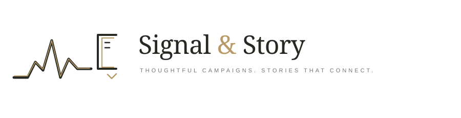

01 / THE ECHO MARK SIGNAL → STORY
Distinctive & expressive
Echo lines resolve into a drawn S gesture. Strongest balance of memorable symbol and clear wordmark.
Three hand-drafted visual directions for a brand that brings campaign thinking and creative content together.
Echo lines resolve into a drawn S gesture. Strongest balance of memorable symbol and clear wordmark.

A campaign line flows into an open story frame—a more digital, active direction.
A refined stamp-like emblem with signal arcs and an open story shape; ideal for campaign signatures.